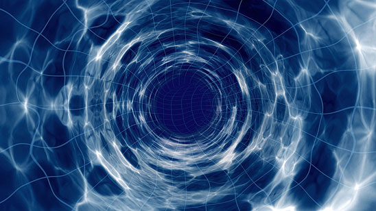

One way to achieve time travel into the future would be travelling at the speed of light in space, as first theorised by Albert Einstein. The accepted theory is that one would have to build a space ship that can travel at the speed of light, and head out into space.
Theoretical physicist and string theorist Brian Greene, of Columbia University, said: "You can build a spaceship, go out into space (and travel) near the speed of light, turn around and come back. Imagine you go out for six months and you turn around and you come back for six months."
While you are travelling at the speed of light, time stays slow relative to the people who are standing still back on Earth. As a result, you would be going fast while your clock would still be going slow. Prof Greene: "When you step out of your ship, you're one year older but Earth has gone through many, many years." "It can have gone through 10,000, 100,000 or a million years depending on how close to the speed of light you traveled."
However, the only problem is that a machine travelling at such speed would require an "unimaginable" amount of energy, while the stress from the centrifugal force on the body would likely prove fatal.
But there is another feasible way to travel though time, and it doesn't involve travelling in outer space. I have a theory that in some places of our planet exists some worm holes that can be used to travel time, and according to my studies it has already happened. The only problem is that I hasn't found them yet, but I can assure that I'm getting close.